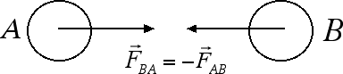
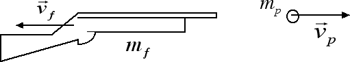

Impulso e quantità di moto
Conservazione della quantità di moto
Nella precedente sezione abbiamo riscritto il secondo principio della dinamica in una forma alternativa, arrivando in questo modo ad enunciare il teorema dell'impulso. In questa sezione vogliamo fare qualcosa di analogo partendo però dal terzo principio della dinamica in presenza di sistemi isolati, ossia di sistemi sui quali non agiscono forze esterne.

Se andiamo a moltiplicare entrambi i lati del terzo principio della dinamica per l'intervallo di tempo Δt otteniamo la seguente relazione
Questa relazione esprime il principio di conservazione della quantità di moto: in un sistema isolato la quantità di moto iniziale del sistema è uguale alla quantità di moto finale del sistema.
Un tipico esempio in cui si può applicare il principio di conservazione della quantità di moto è quello di un proiettile di massa mp sparato da un fucile di massa mf.

Vediamo come si applica il principio di conservazione della quantità di moto in questo caso: il sistema fucile + proiettile può essere considerato un sistema isolato. Le forze che permettono al proiettile di fuoriuscire dal fucile sono tutte interne al sistema fucile + proiettile. Pertanto si può applicare il teorema di conservazione della quantità di moto. All'inizio sia il proiettile che il fucile sono fermi, quindi la quantità di moto totale del sistema è uguale a zero. Di conseguenza deve essere uguale a zero anche la quantità di moto finale del sistema. Questo è possibile perché la quantità di moto è un vettore e la quantità di moto del proiettile ha verso opposto rispetto alla quantità di moto del fucile,
Un altro dispositivo che sfrutta il principio di conservazione della quantità di moto è un razzo in fase di decollo: inizialmente la quantità di moto del sistema razzo + gas di scarico è nulla, poi i gas di scarico vengono emessi dall'alto verso il basso con una certa velocità, conseguentemente il razzo si muoverà dal basso verso l'alto con una quantità di moto uguale ed opposta a quella dei gas di scarico emessi.